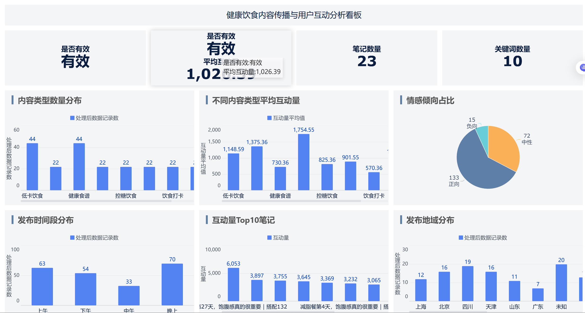

健康饮食内容传播与用户互动分析
本项目围绕小红书平台健康饮食相关内容，完成自动化数据采集、Excel 清洗处理、FineBI 可视化分析与网页成果展示，分析不同健康饮食内容类型的传播表现和用户互动偏好。
项目成员
组长：王振铭
组员：朱睿、高博成、李泽冉、过承雨

项目概述
健康饮食内容在社交平台中具有较高的传播价值。用户在浏览相关内容时，通常关注减脂、低卡、控糖、高蛋白、早餐搭配和饮食打卡等主题。本项目通过结构化数据分析，观察哪些内容更容易获得点赞、收藏和评论，并总结健康饮食内容的传播特征。
项目流程
项目按照“自动化采集 - 数据清洗 - 统计分析 - 可视化展示 - 网页发布”的流程推进，保证数据结果可追溯、分析过程清晰、成果可长期访问。
数据采集
使用自动化采集程序，围绕健康饮食、减脂餐、低卡饮食等关键词整理原始数据。
Excel 清洗
完成去重、格式统一、互动量计算、内容类型和情感倾向标注。
统计汇总
从内容类型、关键词、时间段、地域和互动量等维度生成统计结果。
FineBI 分析
构建交互式仪表板，展示内容分布、互动表现、情感占比和 Top 笔记。
网页发布
将项目背景、数据流程、仪表板和分析结论整合到 GitHub Pages。
FineBI 仪表板展示
仪表板包含内容类型数量分布、不同内容类型平均互动量、情感倾向占比、发布时间段分布、互动量 Top10 笔记和发布地域分布等组件，用于快速识别健康饮食内容的传播表现。
核心分析结论
减脂和低卡内容更受关注
减脂餐、低卡饮食和健康早餐是健康饮食内容中的主要类型，说明用户更关注可执行的日常饮食方案。
实用型标题更容易互动
标题中包含“一周”“低卡”“减脂”“高蛋白”“合集”等表达时，内容更容易获得点赞和收藏。
整体情绪偏积极
健康饮食内容以正向和中性表达为主，用户讨论重点集中在经验分享、饮食记录和生活方式改善。
项目材料
项目保留了自动化采集工程、原始数据、处理后数据、FineBI 仪表板和网页源文件，便于复查与长期展示。